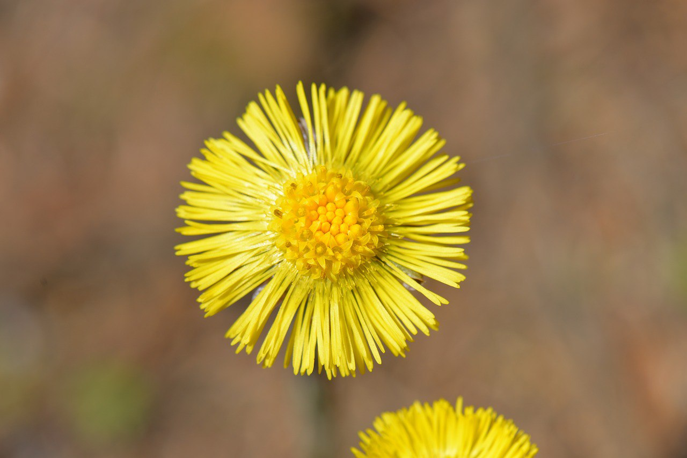

Перо — накожное роговое образование птиц, а также некоторых нептичьих динозавров. Перья растут на определённых участках кожи, называемых птерилиями. Лишь у немногих нелетающих птиц, например у пингвиновых, птерилии не выражены, а перья растут равномерно по всему телу.
